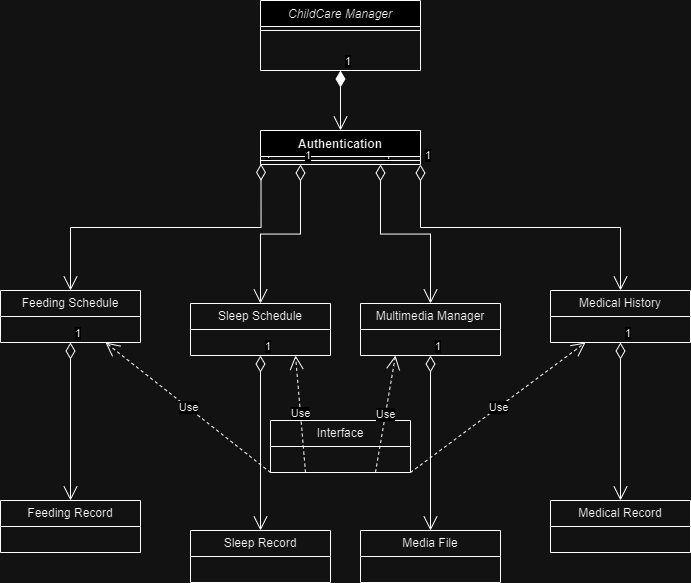

Baby Shark - Childcare Manager
Product Name: Baby Shark Childcare Management System
Revision/Release Number: 1.0
1. Introduction
1.1 Intended Audience:
The Software Requirements Specification (SRS) document for the Baby Shark Childcare Management System is intended for:
1.2 Scope
The software requirements specified in this document pertain to the development of the Baby Shark Childcare Management System. This system aims to provide a comprehensive platform for families or couples to manage various aspects of childcare for children ranging from infancy to puberty. The scope of the product encompasses the following key functionalities:
- Authentication: The system will allow authenticated users, namely families or couples, to access and manage resources related to childcare.
- Childcare Resources Management: Users will be able to manage various resources crucial for childcare, including feeding schedules, sleep schedules, multimedia resources such as photos, videos, and audio recordings documenting the child's development, medical history, and relationship with other children (e.g., cousins, kindergarten/school classmates).
- Chronological View (Timeline): The system will provide a chronological view or timeline of the most important moments captured for each child. This feature will allow users to track and review significant milestones and events in the child's life.
- Sharing Functionality: Users will have the option to share significant moments captured within the system through social applications or via an RSS news feed. This sharing feature enhances social interaction and facilitates sharing cherished memories with family and friends.
- REST/GraphQL Web API: The system functionalities will be exposed through a REST/GraphQL Web API, allowing for seamless integration with other applications and services.
1.3 References
- Logo Generator design.com
- Guide about using CSS Box Model Youtube Link
- Inspiration: a similar website that handles infant well-being with many tools that facilitate taking care of a newborn: babycenter.com
2. Description
2.1 Product Perspective
The child care management application is designed as a standalone system, catering to the unique needs of families or couples responsible for the care of children. It is not intended to be a replacement for existing systems but rather a comprehensive solution tailored specifically for child care management.
System Components:The application comprises various modules including feeding schedules, sleep patterns, multimedia management, medical history, and relationship tracking. These modules interact seamlessly within the application framework to provide a holistic view of the child's well-being.
Interfaces:While the application functions independently, it may interface with external systems or services, such as social media platforms for sharing significant moments or RSS news feeds for broader dissemination of child care updates.
2.2 Product Functions

2.3 User Classes
-
Parents:
- Use: Daily, full access.
- Tech: Varied.
- Security: Full access.
- Experience: Varied.
- Importance: Primary users, satisfaction key.
-
Family/Caregivers:
- Use: Occasional, specific features.
- Tech: Varied.
- Security: Limited access.
- Experience: Varied.
- Importance: Secondary users, access may vary.
-
Health Professionals:
- Use: Periodic, medical history.
- Tech: Moderate to advanced.
- Security: Privacy measures.
- Experience: Healthcare professionals.
- Importance: Critical for accurate care.
-
Educators/School Staff:
- Use: Occasional, school-related info.
- Tech: Varied.
- Security: Limited access.
- Experience: Education background.
- Importance: Facilitate home-school coordination.
-
System Administrators:
- Use: Regular, system management.
- Tech: Advanced.
- Security: Elevated privileges.
- Experience: Technical expertise.
- Importance: Critical for system reliability.
2.4 Operating Environment
Frontend:
- HTML and CSS: The frontend of the application will be built using HTML and CSS for structuring and styling the user interface. (via Visual Studio Code)
Backend:
- JavaScript: The backend of the application will be developed using JavaScript, particularly with Node.js runtime environment. (also with Visual Studio Code)
Database:
- GraphQL: The database will be implemented using GraphQL, which provides a query language for interacting with the database.
Operating System:
- The software should be compatible with various operating systems including Windows, macOS, and Linux distributions.
Web Browser Compatibility:
- The frontend should be compatible with popular web browsers such as Google Chrome, Mozilla Firefox, Safari, and Microsoft Edge.
2.5 Assumptions
- The project assumes a certain level of scalability in terms of user base and data volume. However, specific scalability requirements may evolve over time and need to be addressed accordingly.
- It is assumed that appropriate measures will be taken to ensure data privacy and security, including encryption of sensitive information and adherence to relevant regulations such as GDPR.
- The project assumes the availability and functionality of third-party components or libraries for certain features, such as authentication, user interface components, and GraphQL server implementation.
3. Interface
4. System Features
4.1 Feature 1: Feeding Schedule Management
Description and Priority: Track and manage feeding schedules for children. Priority: High.
- View and edit feeding events on a calendar.
- Add new feeding events with date, time, type, and quantity.
- Validate inputs and handle errors gracefully.
- Ensure data persistence.
4.2 Sleep Schedule Management
Description and Priority: Monitor and manage sleep schedules for children. Priority: Medium.
- Display timeline view of sleep events.
- Add new sleep events with start and end times.
- Validate inputs and handle errors.
- Enable editing and deletion of sleep events.
- Ensure data persistence.
4.3 Feature 3: Multimedia Management
Description and Priority: Upload and organize multimedia content related to child's development. Priority: Low.
- Support uploading of photos, videos, and audio recordings.
- Validate file formats and sizes.
- Provide metadata options for each multimedia item.
- Display multimedia content in gallery format.
- Implement browsing and searching features.
- Ensure data security and privacy.
4.4 Feature 4: Medical History Tracking
Description and Priority: Maintain comprehensive medical history for the child. Priority: High.
- Enter various types of medical records.
- Validate input and handle errors.
- Enable viewing, editing, and deleting of medical records.
- Implement reminders for appointments and vaccines.
- Support exporting and printing of medical records.
- Ensure data confidentiality and compliance.
5. Other Requirements
5.1 Performance Requirements
- Response Time: System response time: < 1 second under normal conditions.
- Concurrent Users: Support: Minimum 100 concurrent users.
- Data Retrieval Speed: Database queries: < 500 milliseconds.
- Data Storage Capacity: Capacity: Minimum 10,000 records per data category.
- Peak Load Handling: Handle peak loads without crashing.
- Error Handling Time: Error handling: < 200 milliseconds.
- Network Latency: Network latency: < 100 milliseconds.
- Real-Time Updates: Real-time updates delivery: < 1 second.
5.2 Safety Requirements
- Data Security: Safeguard sensitive user information through encryption and access control.
- User Authentication: Implement strong password policies and multi-factor authentication.
- Backup and Recovery: Establish regular data backup procedures and reliable recovery processes.
- Error Handling: Implement comprehensive error handling mechanisms.
- Regulatory Compliance: Ensure compliance with relevant regulations like GDPR.
- Child Safety Guidelines: Adhere to child safety guidelines for uploaded content.
- System Reliability: Conduct thorough testing for reliability and stability.
- Safety Certifications: Obtain necessary safety certifications.
5.3 Security Requirements
- Data Encryption: Encrypt sensitive user data during storage and transmission.(as stated previously)
- Access Control: Implement role-based access control (RBAC) for data protection.
- User Authentication: Enforce strong user authentication mechanisms.
- Audit Trails: Maintain logs of user activities for monitoring and detection.
- Data Minimization: Minimize collection and storage of personally identifiable information (PII).
- Secure Communication: Use HTTPS for secure data transmission.
- Regular Updates: Keep software and dependencies updated for security.
- Regulatory Compliance: Ensure compliance with security and privacy regulations.
- Security Testing: Conduct regular security assessments and penetration testing.
- Privacy Certifications: Obtain relevant privacy certifications for assurance.
5.4 Software Quality Attributes
- Reliability: Ensure a system reliability rating of at least 99%.
- Usability: Maintain a user interface usability score above 85%.
- Maintainability: Aim for a maintainability index of at least 80%.
- Scalability: Support a 50% increase in concurrent users without performance degradation.
- Security: Achieve a security score of 90% or higher in vulnerability assessments.
- Interoperability: Ensure compatibility with external systems with an interoperability rating above 85%.
- Testability: Implement comprehensive testing strategies for thorough test coverage.
- Adaptability: Adapt to evolving user needs and technological advancements.
- Availability: Maintain a system availability of 99.9%.
- Correctness: Ensure a correctness rating of 95% or higher based on thorough testing.
5.5 Business Rules
- User Roles and Permissions: Administrators have full access, while regular users have restricted access based on their roles.
- Data Privacy: Personal and medical information must be kept confidential.
- Collaboration and Sharing: Users can share access to child profiles or information, ensuring accuracy and validity.
- Compliance with Regulations: The application must comply with relevant data privacy and security regulations.
Thank you for reading!